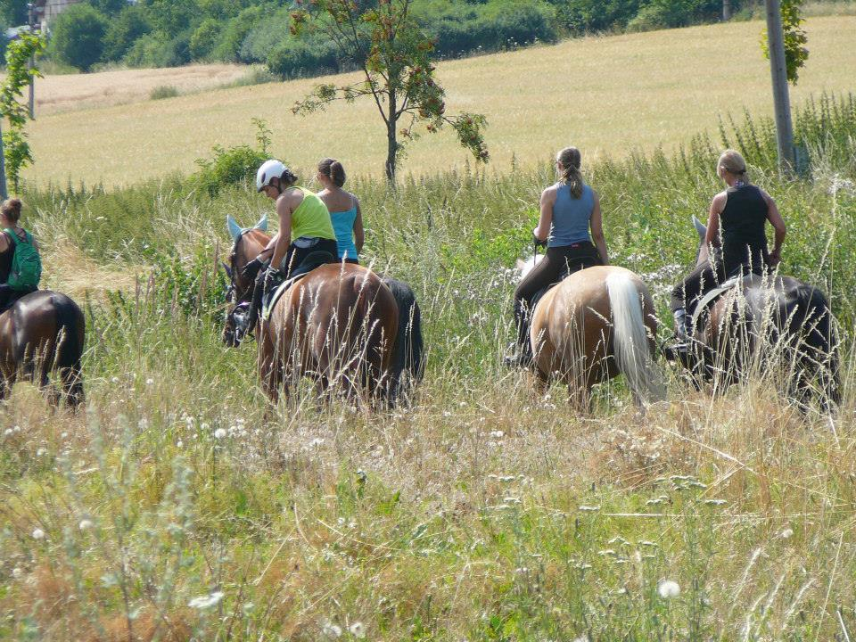
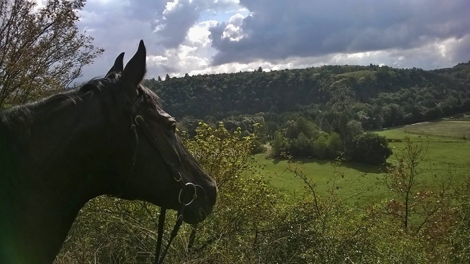

Máte zájem o vyjížďku?
Kontaktujte nás a domluvíme termín, který vám vyhovuje.
Vyjížďky na koních a ponících do krásné okolní přírody

Nabízíme vyjížďky do krásné okolní přírody nedaleko Slapské přehrady. Vyjížďky je možné objednávat samostatně nebo jako součást výcviku.
Vyjížděk se mohou zúčastnit jak začínající, tak pokročilí jezdci — okolní příroda nabízí široké možnosti tras pro všechny úrovně.

Pro úplné začátečníky, kteří ještě nezvládnou samostatně vést koně v terénu, nabízíme procházku v kroku s asistentem, který vašeho koně doprovodí pěšky.
Tempo a náročnost vyjížďky je vždy uzpůsobeno nejslabšímu jezdci ve skupině.
Krásné smíšené lesy s nepřeberným množstvím koním přístupných cest a členitým terénem. I když pojedete podesáté, vždy můžete zvolit jinou variantu.
Vyjížďka na 1 nebo 2 hodiny. Podle výkonnosti jezdců můžeme jít pouze v kroku, nebo zařadit i klusovou a cvalovou pasáž dle stavu terénu.
Malebná oblast v povodí říčky Kocáby nedaleko Štěchovic. Projíždíme starými trempskými osadami jako je Havran, Askalona a Daschwood. Členitý terén přes meandry Kocáby.
Romantická vyjížďka pro začátečníky i pokročilé. Procházky v kroku s krátkými klusovými pasážemi, max. 2 hodiny.
Kontaktujte nás a domluvíme termín, který vám vyhovuje.